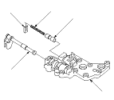

Manual Valve Body Disassembly, Inspection, and Reassembly
Remove the spring seat (A), valve spring (B), and reverse inhibitor valve (C) from the manual valve body (D).
Reverse Inhibitor Valve Spring Specifications(Standard)
Wire diameter: 1.1 mm (0.043 in.)
Outside diameter: 7.0 mm (0.276 in.)
Free length: 46.8 mm (1.843 in.)
Number of coil: 21.4
Remove the manual valve (E).
Check the all part wear and damage.
Clean all parts thoroughly in solvent or carburator cleaner, and dry with compressed air. Blow out all passages.
Coat all parts with ATF during assembling.
